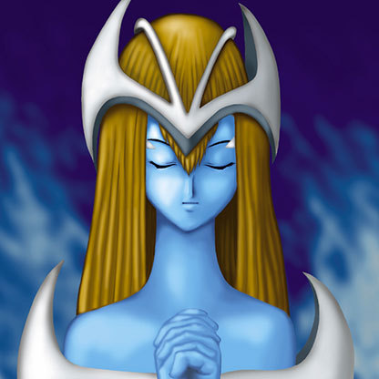

Mystical Elf

Description: "When this card is flipped face-up, powers up all of your own LIGHT monsters by 800 points."
STATS
ATK: 800
DEF: 2000DECK COST
Deck Cost per Card: 33EFFECT IS IMPLEMENTED!
Fusion List (44 Possible Fusions)
- Mystical Elf + Air Marmot of Nefariousness = Nekogal #2
- Mystical Elf + Ancient Jar = Mystical Sand
- Mystical Elf + Binding Chain = Dark Witch
- Mystical Elf + Blackland Fire Dragon = Dark Elf
- Mystical Elf + Bolt Penguin = The Immortal of Thunder
- Mystical Elf + Dark Elf = Dark Witch
- Mystical Elf + Dark Plant = Queen of Autumn Leaves
- Mystical Elf + Dice Armadillo = Mystical Sand
- Mystical Elf + Fairy's Gift = Dark Witch
- Mystical Elf + Firegrass = Queen of Autumn Leaves
- Mystical Elf + Greenkappa = Celtic Guardian
- Mystical Elf + Griffore = Nekogal #2
- Mystical Elf + Griggle = Queen of Autumn Leaves
- Mystical Elf + Haniwa = Mystical Sand
- Mystical Elf + Happy Lover = Dark Witch
- Mystical Elf + Hard Armor = Celtic Guardian
- Mystical Elf + Hoshiningen = Dark Witch
- Mystical Elf + Hourglass of Courage = Dark Witch
- Mystical Elf + Labyrinth Wall = Mystical Sand
- Mystical Elf + Laughing Flower = Queen of Autumn Leaves
- Mystical Elf + Lunar Queen Elzaim = Dark Witch
- Mystical Elf + M-Warrior #2 = Celtic Guardian
- Mystical Elf + Mask of Darkness = Dark Elf
- Mystical Elf + Milus Radiant = Nekogal #2
- Mystical Elf + Monster Egg = Celtic Guardian
- Mystical Elf + Muka Muka = Mystical Sand
- Mystical Elf + Oscillo Hero #2 = The Immortal of Thunder
- Mystical Elf + Petit Angel = Dark Witch
- Mystical Elf + Princess of Tsurugi = Celtic Guardian
- Mystical Elf + Ray & Temperature = Dark Witch
- Mystical Elf + Rhaimundos of the Red Sword = Celtic Guardian
- Mystical Elf + Sectarian of Secrets = Dark Elf
- Mystical Elf + Shadow Specter = Magical Ghost
- Mystical Elf + Silver Fang = Nekogal #2
- Mystical Elf + Skull Servant = Magical Ghost
- Mystical Elf + Stone Armadiller = Mystical Sand
- Mystical Elf + The Shadow Who Controls the Dark = Dark Elf
- Mystical Elf + Tiger Axe = Nekogal #2
- Mystical Elf + Torike = Nekogal #2
- Mystical Elf + Turtle Raccoon = 30,000-Year White Turtle
- Mystical Elf + Winged Dragon, Guardian of the Fortress #1 = Blackland Fire Dragon
- Mystical Elf + Winged Egg of New Life = Dark Witch
- Mystical Elf + Wow Warrior = Amazon of the Seas
- Mystical Elf + Zombie Warrior = Magical Ghost